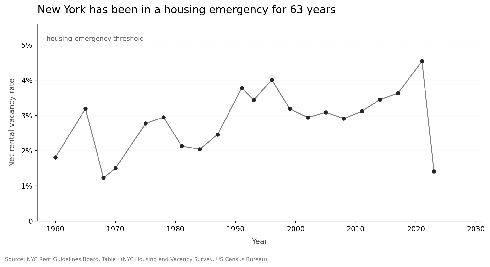

Last month - and for the first time in its history - New York City froze two-year lease rents. This is great news for 2.4 million New Yorkers currently living in regulated homes, but history is much less encouraging for those who aren't.
Though Mamdani's 'Freeze the Rent' is unprecedented, the realities faced by (and stories told to) New Yorkers are not new. The city once kept wartime rent controls long after the Second World War had passed. Some benefitted from the newfound affordability, but many found themselves left out and neglected by a system that favoured the few over the many. Rent controls reduced housing supply and pushed unregulated rents higher. You can't escape prices in a free economy.
Proponents of rent control often point out that landlords can absorb the cap. New buildings are also exempt, so rent freezes do not impose any disincentives to new residential construction. Yet the city's vacancy rate has stayed below 5% for sixty-three years, the level at which the law declares a housing emergency. And New York has rarely upheld such exemptions in the past. Developers lack certainty that the carve-outs offered by Mamdani today will persist in future. So fewer homes are built, and New Yorkers face a new bureaucracy in finding a new home.
It's hard to believe a permanent emergency could be fixed by a temporary freeze.
You can read Friedman’s 1971 ‘Roofs or Ceilings’ column here.
